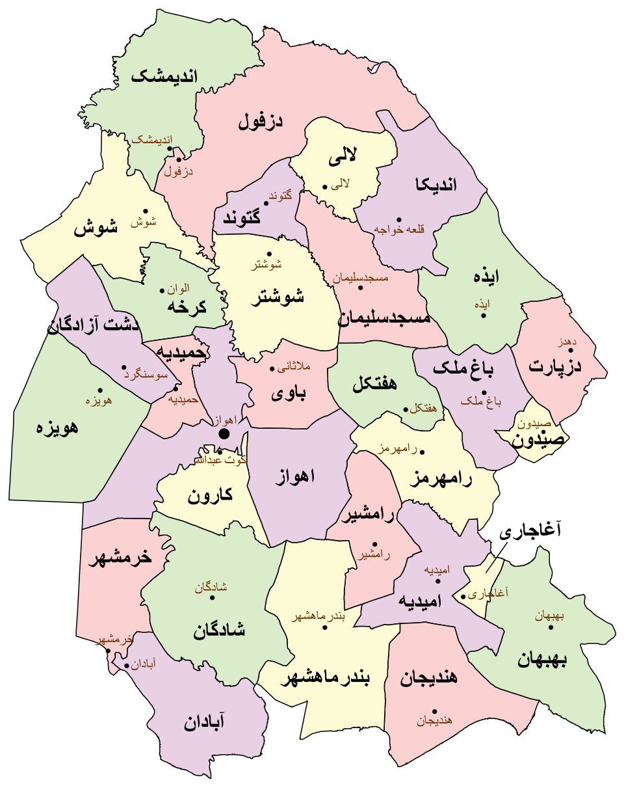
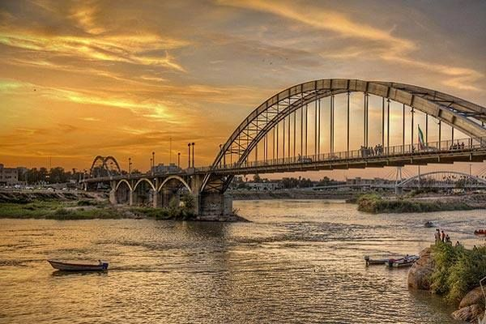
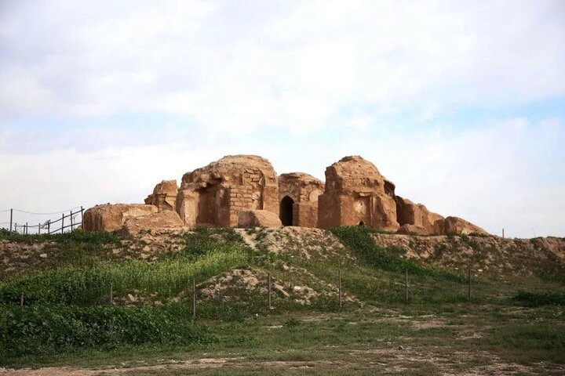
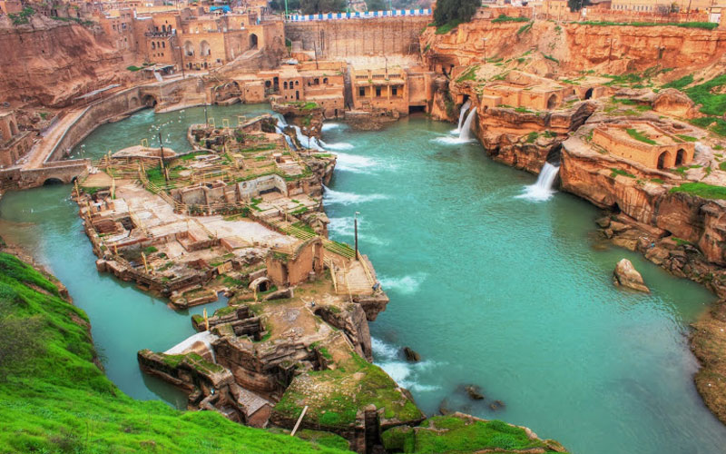

در یک نگاه
مرکز استان
اهواز
مساحت
۶۴٬۰۵۷ کیلومتر مربع
جمعیت
≈ ۴٫۷–۵ میلیون نفر
لقب
سرزمین کارون و نخل
تمدن ایلام و تاریخ کهن
خوزستان یکی از قدیمیترین مناطق مسکونی جهان است. تمدن ایلام (حدود ۲۷۰۰ ق.م) در این سرزمین شکوفا شد. زیگورات چغازنبیل (میراث جهانی یونسکو)، هفتتپه، شوش و آثار باستانی متعدد نشان از قدمت چند هزار ساله این خطه دارد. خوزستان همواره محل تلاقی فرهنگهای ایلامی، پارسی، عربی و لر بوده است.

نمایش اهواز روی نقشهرود کارون و طبیعت جنوب
کارون بزرگترین و پرآبترین رود ایران است و زندگی مردم خوزستان را شکل داده. نخلستانهای وسیع، تالاب شادگان (بزرگترین تالاب ایران)، آبشار شوی، دریاچه شهیون و سازههای آبی شوشتر (میراث جهانی) از جاذبههای طبیعی بینظیر این استان هستند.

جاذبههای تاریخی و طبیعی
از پلهای معلق اهواز روی کارون، آرامگاه دانیال نبی در شوش، قلعه سلاسل شوشتر، تالاب شادگان، نرگسزارهای بهبهان تا مناطق نفتخیز و فرهنگ غنی عشایر عرب و بختیاری؛ خوزستان ترکیبی بینظیر از تاریخ، طبیعت و تمدن است.
 آرامگاه دانیال نبی
آرامگاه دانیال نبی

قلعه سلاسل
بند میزانجاذبههای برتر
زیگورات چغازنبیل
معبد ایلامی حدود ۱۲۵۰ پ.م؛ نخستین اثر ایران در فهرست جهانی یونسکو (۱۹۷۹).
شوش
از کهنترین شهرهای جهان؛ ثبت جهانی ۲۰۱۵.
سازههای آبی شوشتر
شبکهای از آسیابها و کانالها و بندها؛ ثبت جهانی ۲۰۰۹.
تالاب شادگان
تالابی بزرگ و ثبتشدهی رامسر و زیستگاه پرندگان مهاجر.
آرامگاه دانیال نبی
زیارتگاه کهن در شوش.
قلعه سلاسل
قلعهی تاریخی شوشتر مشرف بر رود کارون.
آبشار شوی
آبشارهای کوهستانی نزدیک دزفول.
پلهای اهواز
پلهای مشهور روی کارون مانند پل سیاه.
سوغات و خوراک
- قلیه ماهی
- قلیه میگو
- رنگینک
- خرما
- ماهی و غذاهای دریایی
غذاهای خوزستان تند و پرادویهاند؛ قلیهی ماهی و میگو و رنگینک (دسر خرما) از معروفترینهایند.
بهترین زمان سفر
میدانستید؟
- کارون بزرگترین رود ایران از نظر حجم آب است.
- چغازنبیل نخستین اثر ایران است که در فهرست میراث جهانی یونسکو ثبت شد.
- نخستین چاه نفت ایران در سال ۱۲۸۷ ش (۱۹۰۸ م) در مسجدسلیمان حفر شد.